Systematische Beschreibung eines Forschungsgegenstandes
Erklärung des Forschungsgegenstand
Erklärungen sind Aussagen über kausale Ursache und Wirkungszusammenhänge
Prognosen und Handlungsempfehlungen über den Forschungsgegenstand
Beispiel Zugang zu Hochschulbildung
Auf den kommenden Seiten wollen wir die Ziele der Bildungsforschung am Beispiel Mädchen und Frauen in der Bildung erarbeiten.
Auch heute noch hat das Geschlecht der Schülerinnen und Schüler eine Auswirkung auf Bildungserfolg.
Seit dem Ende des 19. Jahrhunderts wurde an deutschen Universitäten allmählich die Immatrikulation von Frauen erlaubt
Bis weit in die Mitte des 20. Jahrhunderts hatten Mädchen und Frauen nicht die gleichen Bildungschancen wie Männer.
Dies hat ein idealtypisches Bild geprägt: Besonders benachteiligt waren damals die Arbeitermädchen vom Lande.
Aus heutiger Sicht sind Frauen als Bildungsgewinner zu bezeichnen:
Als Bildungsverlierer gelten hingegen Jungs mit Migrationshintergrund.
Frauen haben die Jungs bei den Bildungsabschlüssen "überflügelt"
Dies zeigt sich beim Hochschulzugang
Studienberechtigte
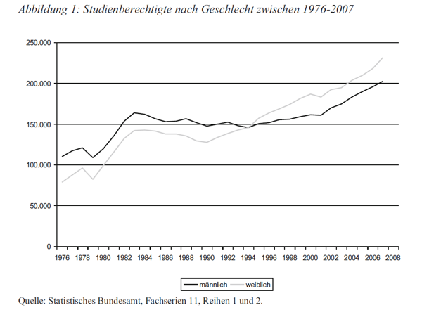
Abbildung: Lörz & Schindler 2011
Studierende
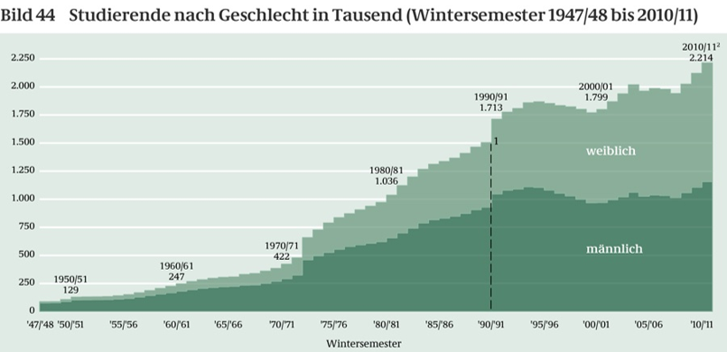
Abbildung: bpb.de
Sorry, boys! :-)
Somit lässt sich zwar eine positive Entwicklung in Deutschland und vielen westlichen Ländern hinsichtlich des Zugangs zu Bildung zeigen.
Das heißt jedoch nicht, dass Mädchen weltweit die gleichen Chancen haben. Oder dass das Geschlecht unwichtig für die Bildungsforschung geworden ist.
Denn wie bezahlt machen sich die Bildungsabschlüsse der Frauen in Deutschland? Karriere in der ...
Wissenschaft?
Politik?
Wirtschaft?
Wissenschaft: Leaky Pipeline
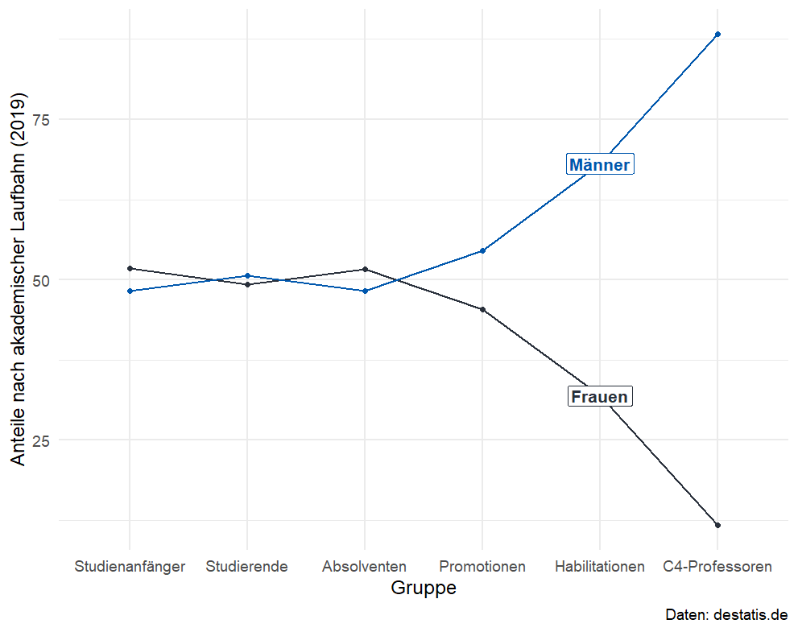
Politik
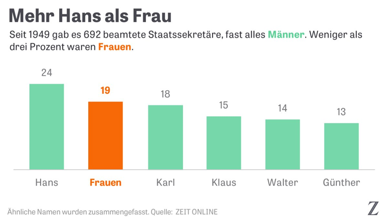
Abbildung: Zeit Online 2018
Wirtschaft
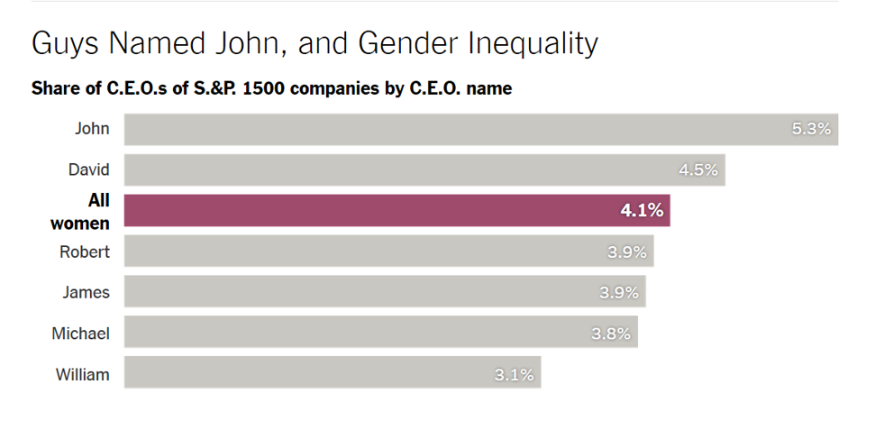
Abbildung: New York Times 2015
Ursache für geringeres Einkommen: Fachwahl
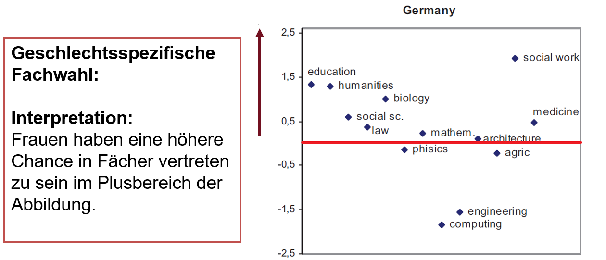
Abbildung: Barone 2011
Weitere Ursachen für geringeres Einkommen von Frauen:
Zum Teil geringere Bezahlung in Berufen mit hohen Frauenanteil
Geschlechtsspezifische Anteile bei der Kinderbetreuung und Teilzeitbeschäftigung von Frauen
Diskriminierung?
Rückbezug zu den Zielen der Bildungsforschung
Systematische Beschreibung eines Forschungsgegenstandes
Erklärung des Forschungsgegenstand
Erklärungen sind Aussagen über kausale Ursache und Wirkungszusammenhänge
Prognosen und Handlungsempfehlungen über den Forschungsgegenstand
Bildungsforschung muss sich nicht nur mit unterschiedlichen Stakeholdern beschäftigen, sondern auch mit dem System in dem Bildungsprozesse stattfinden.
Sprich, mit dem ganzen "System" :-)
3. Ausgestaltung des Bildungssystems
Beispiele für Ausgestaltungsaspekte:
Übergang von der Grundschule in die weiterführende Schule
Ausgestaltung des Gymnasiums (Stichwort: G8/G9)
Ausgestaltung der Hochschule (Stichwort: Bologna)
Anzahl an Schülerinnen und Schüler pro Klasse
...
Die EBF muss dabei die Mikro und Makroebene der Gesellschaft berücksichtigen, da Bildungsprozesse nicht nur auf der Individualebene stattfinden.
Colemansche Badewanne
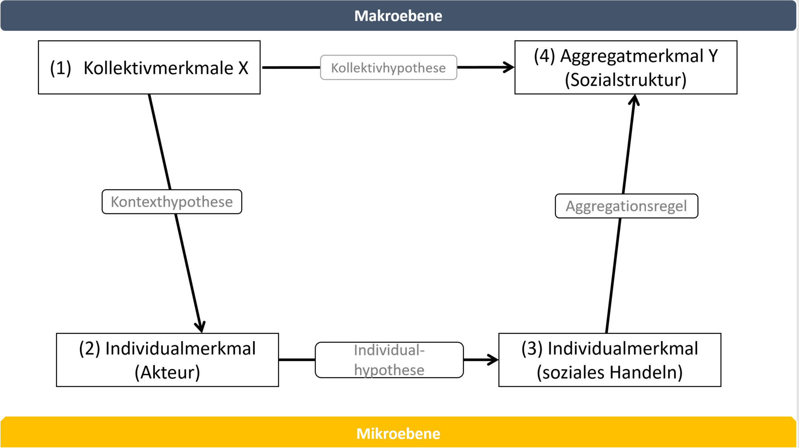
Abbildung nach Basistext von Becker
Coleman am Beispiel der Klassengröße
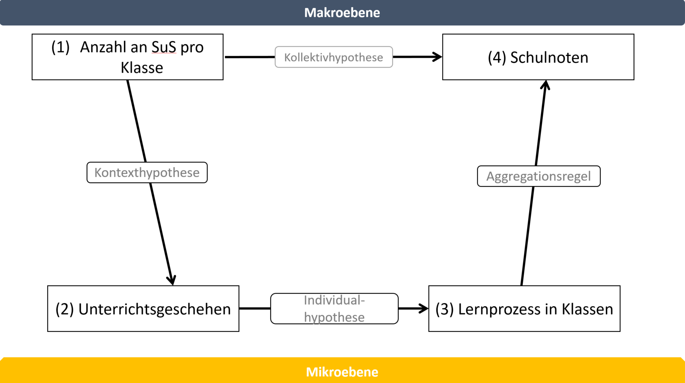
Diese Perspektive hilft uns zudem, vor einem ökologischen Fehlschluss:
Bei einem ökologischen Fehlschluss wird auf Basis von Aggregatdaten (die Merkmale eines Kollektivs abbilden) unzulässigerweise auf Individualdaten geschlossen.
Ökologischer Fehlschluss
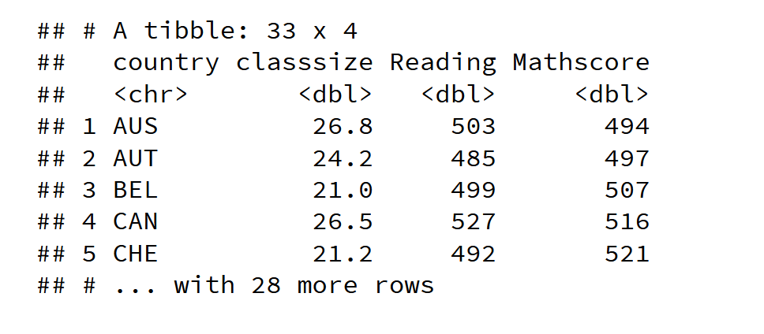
Zwischenfazit
Einbettung des Bildungssystems in gesamtgesellschaftliche Prozesse
Ziele der Bildungsforschung treffen auf viele Themen der EBF gleichermaßen zu
Ursache und Wirkung der Ausgestaltung des Bildungssystems auf ein Outcome Y
Y: Noten der Schülerinnen, Kompetenzen, Stresslevel der Eltern, usw.
4. Messung von Bildung
Zertifikate vs. Kompetenzen
Zertifikate
Messung durch: Dauer des Schulbesuchs in Jahre, höchster erreichter Abschluss, Noten
Vorteil: Leichte Zugänglichkeit für die Forschung
Problem: Vergleichbarkeit zwischen Ländern
Problem Validität: Was misst ein Abschluss?
Kompetenzen
PISA, Pirls, Timms, etc.
Leistungstests zur Ermittlung von Kompetenzstufen
Probleme: Messung von latenten Eigenschaften? Validität?
Aber: Nachvollziehbare Testkonstruktion
Kompetenzen: Beispiel PISA
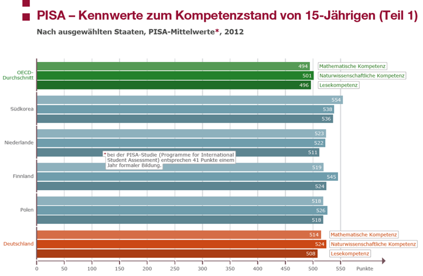
Abbildung: BPD
Testkonstruktion
Ein kurzes Anwendungsbeispiel zum Nachlesen nach Sälzer (2016): Studienbuch
Schulleistungsstudien. Das Rasch-Modell in der Praxis:
“Bei der Testkonstruktion geht man davon aus dass aus manifesten Daten
(z. B. den Antworten auf Testaufgaben) auf zugrunde liegende latente
Variablen (z. B. die mathematische Kompetenz) einer Person geschlossen
werden kann (Item Response Theorie).”
“Ferner beruhen Testkontruktionen häufig auf dem Rasch-Modell. Dies basiert auf der Annahme, dass sich die Kompetenz einer Person
anhand ihrer Fähigkeit sowie der Schwierigkeit der gestellten Testaufgaben
eindimensional beschreiben lässt (Rasch 1960)”
“Die einzelnen Fragen oder Items der Test Batterie sollen demnach Rasch konform sein: Eine besonders fähige (kompetente)
Person muss schwierige Aufgaben folglich mit einer höheren Wahrscheinlichkeit lösen
können als eine weniger fähige Person.”
Testkonstruktion: Anwendungsbeispiel
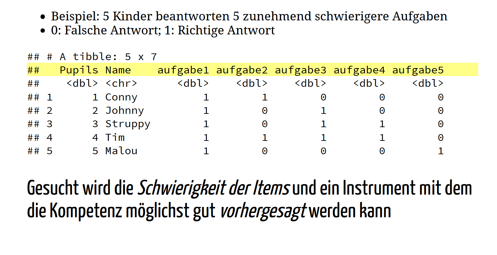
Item Schwierigkeit
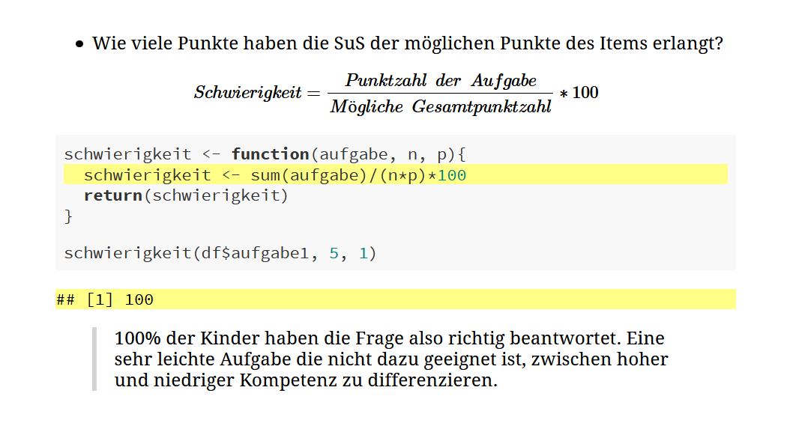
Item Trennschärfe
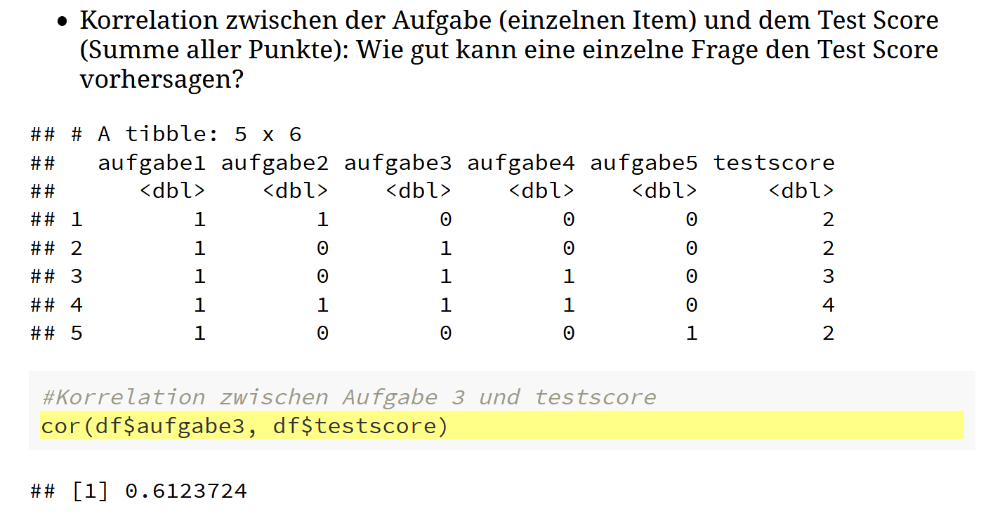
Praxisbeispiel mit hoher Trennschärfe
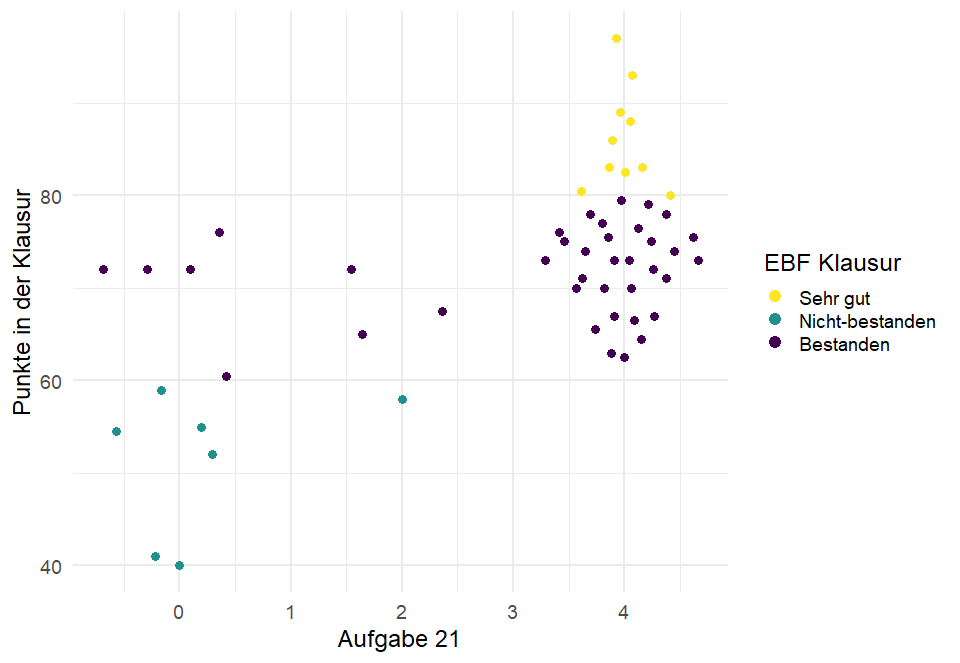
Praxisbeispiel mit niedriger Trennschärfe
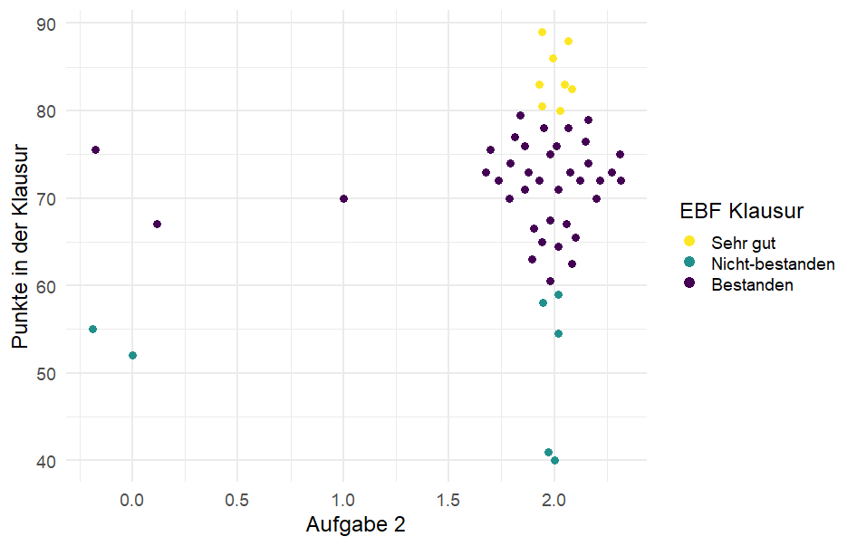
Zertifikat- und Kompetenzarmut
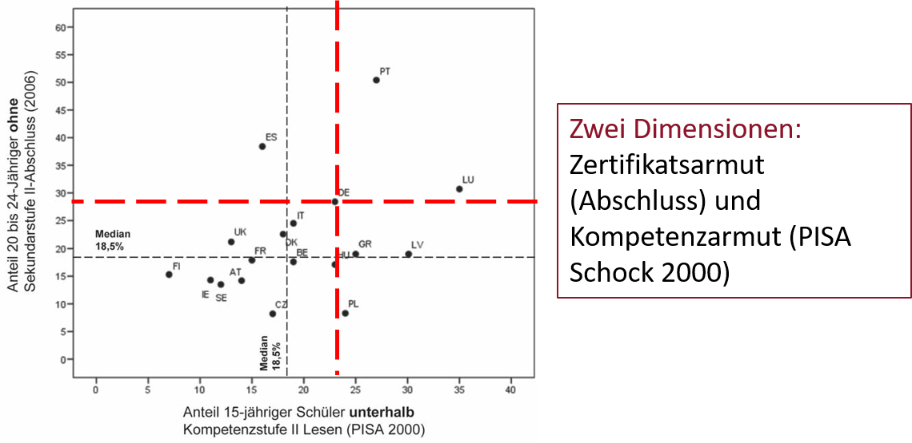
Abbildung: www.pisa.tum.de
Merke: Es gibt nur eine schwache Korrelation zwischen Zertifikaten und Kompetenzen, d.h. beide Aspekte messen unterschiedliche Konstrukte.
Zusammenfassung
Bildung ist mit mehreren positiven Eigenschaften verbunden